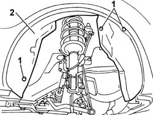

7055B66 ENGINE COMPARTMENT DUST SHIELD PROTECTION IN RIGHT FRONT WHEEL ARCH - R.R.
- Path
- Procedures > 70 FITTINGS > 7055 MOULDINGS ON PROTECTIONS > 7055B EXTERIOR PROTECTIONS > 7055B66 ENGINE COMPARTMENT DUST SHIELD PROTECTION IN RIGHT FRONT WHEEL ARCH - R.R.
- Kind
- repair procedure (removal / refitting; the operation number is the code)
- Applies to
- engines: 1.2 8v; all production periods
- Interactive page
- https://sloeber94.github.io/elrnDB-fPnd/en/#/169001907
Applies to: engines: 1.2 8v; all production periods
 Removing
Removing
 Refitting
RefittingOp. 4450B04 RIGHT FRONT WHEEL R R
Position the vehicle on a lift.
Raise the vehicle.
1. Undo the retaining bolts.
2. Remove the wheel arch liner.

Applies to: engines: 1.2 8v; all production periods
Refitting
RemovingFit the wheel arch liner in place and tighten the fixing bolts.
Lower the vehicle.